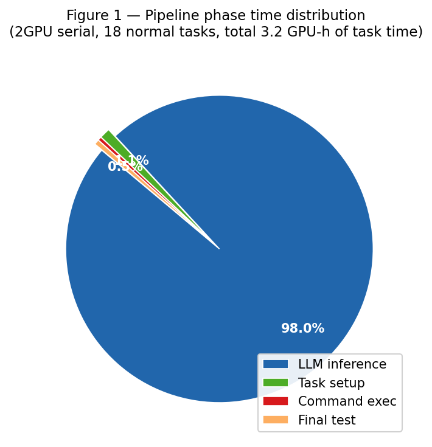
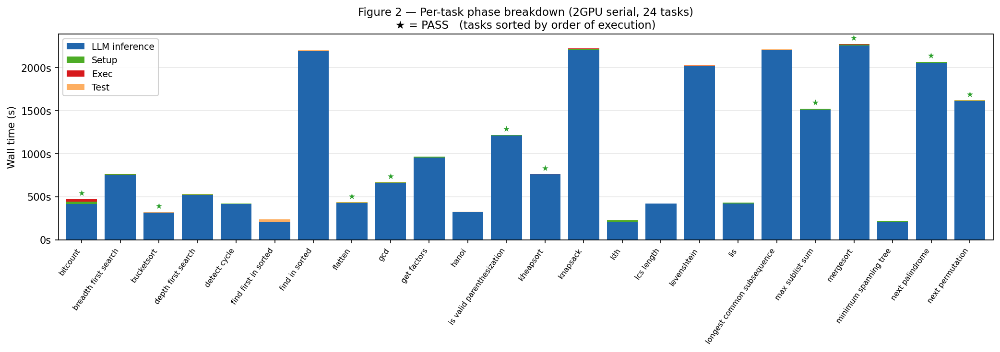
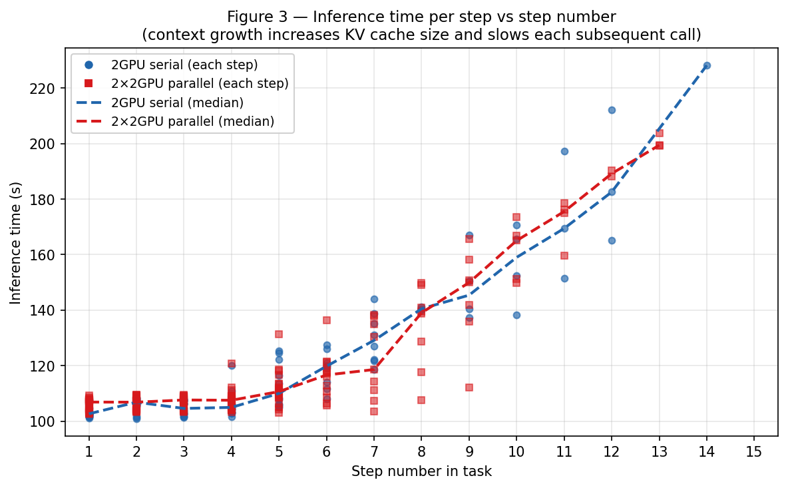
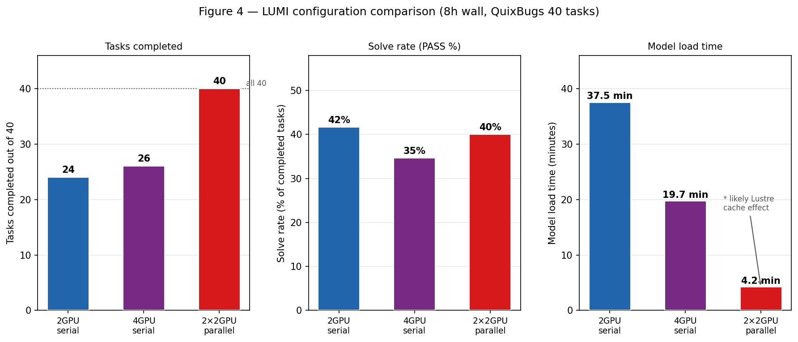

Course project report, Jens Stockmarr Date: March 2026
This project investigates the practical feasibility of running interactive AI coding agents on the LUMI supercomputer using a locally hosted large language model. A minimal agent loop was implemented in which the model iteratively generates bash commands to fix bugs, evaluated on QuixBugs, a published benchmark of 40 single-line Python algorithm bugs. The system records time spent in each pipeline phase: model loading, task setup, LLM inference, command execution, and testing.
The main result is that LLM inference dominates total runtime, accounting for 95 to 99 percent of wall time. Increasing GPU count from 2 to 4 does not improve inference speed due to a ROCm limitation in the mixture-of-experts routing path of the model. Running multiple jobs in parallel is far more effective: two parallel 2-GPU jobs complete all 40 tasks within the same 8-hour window that a single 4-GPU job cannot finish, at identical total GPU cost, with a 40 percent solve rate across the full benchmark.
| Week | Work |
|---|---|
| Jan 27 | Project setup, first TA meeting, LUMI access |
| Feb 3 | TA meeting, mini-SWE-agent and SWE-bench running locally |
| Feb 10 | First GPU inference on LUMI (Experiment 1) |
| Feb 17 | SLURM setup, one-shot diff generation (Experiment 2) |
| Feb 23 | Interactive agent loop (Experiment 3) |
| Mar 9 | Agent on SWE-bench tasks, ROCm fix, container blocker (Experiment 4) |
| Mar 16 | Switched to QuixBugs, timing instrumentation, 2GPU and 4GPU runs (Experiment 5) |
| Mar 21 | Parallel jobs, first complete 40-task run |
| Mar 22 | Analysis, figures, report draft |
| Mar 26 | Report finalisation |
Primary question: How does scaling AI coding agents on LUMI affect performance, efficiency, and solution quality when evaluated on a standard software engineering benchmark?
Sub-questions:
Scope:
Out of scope:
Open weights, downloadable and runnable locally without an API. Strong instruction-following and structured output needed for the agent loop. Good code reasoning relative to inference cost. Also available on the HuggingFace Inference API (free tier), which allowed early experiments before GPU access was stable. Full technical details in §4.
A hand-written single-file loop rather than an existing framework. Every prompt, response, and timing measurement is explicit with no hidden retrying or state management. A single Python file with no heavy dependencies is also much easier to run inside a Singularity container on LUMI. The goal is to understand infrastructure scaling, not to maximise pass rate.
The pipeline takes a task, runs an agent loop using a local LLM, and evaluates the result with tests.
flowchart TD
BENCH["📋 Benchmark tasks (QuixBugs, 40 Python bugs)"]
TASK["Task: description + source + test command"]
AGENT["🤖 Coding agent loop"]
LLM["🧠 GLM-4.7-Flash on LUMI GPU"]
ENV["🗂 Task repository copy"]
PATCH["📄 Git patch"]
EVAL["✅ pytest result"]
METRICS["📊 Timing metrics"]
BENCH --> TASK
TASK --> AGENT
AGENT <-->|"prompt / response"| LLM
AGENT <-->|"commands + output"| ENV
AGENT --> PATCH
PATCH --> EVAL
EVAL --> METRICS
Each task is solved iteratively. The model proposes a command, it runs, and the output is fed back until a patch is submitted or the step limit is reached.
flowchart TD
START["Task → model"]
THINK["Generate bash command"]
RUN["Execute command"]
CHECK{Submit?}
OBS["Return output"]
SUBMIT["Collect diff"]
TEST["Run pytest"]
RESULT(["PASS / FAIL + metrics"])
START --> THINK
THINK --> RUN
RUN --> CHECK
CHECK -->|no| OBS
OBS --> THINK
CHECK -->|yes| SUBMIT
SUBMIT --> TEST
TEST --> RESULT
Design choices:
flowchart LR
subgraph LUMI ["LUMI standard-g partition"]
subgraph JOB ["SLURM job"]
SIF["Singularity container"]
GPU["2–4 AMD MI250X GPUs"]
MODEL["GLM-4.7-Flash"]
AGENT2["Agent loop"]
SIF --> AGENT2
SIF --> MODEL
MODEL --- GPU
end
end
HF["Model cache"]
TASKS["Tasks + repo"]
HF --> MODEL
TASKS --> AGENT2
Two issues prevented using SWE-bench on LUMI:
Decision: use a benchmark that runs directly in Python without containers.
QuixBugs consists of 40 small Python programs, each containing a single bug.
| Property | Value |
|---|---|
| Tasks | 40 |
| Bug type | Single-line logic error |
| Evaluation | pytest |
| Dependencies | Standard library |
This makes it ideal for measuring pipeline timing.
GLM-4.7-Flash is a 32B mixture-of-experts model. It requires about 64 GB in bfloat16 format, which matches one MI250X GPU.
ROCm does not support the grouped GEMM kernel used in the model. A small patch forces a fallback implementation. This keeps the model functional but slows inference.
The model fills a single GPU, so at least two GPUs are needed to allow space for inference.
A minimal script loaded GLM-4.7-Flash and ran a simple coding prompt as a SLURM job.
Single prompt producing a diff.
Introduced the loop on a simple task.
torch._grouped_mm, which exists on ROCm but is not implemented. Fixed with a one-line patch to skip the fused kernel and fall back to standard torch.mm.singularity exec from inside another Singularity container. No workaround preserved both GPU access and task isolation, which is why the project switched to QuixBugs.| Config | Jobs | GPUs/job | Tasks |
|---|---|---|---|
| 2 GPU serial | 1 | 2 | 40 |
| 4 GPU serial | 1 | 4 | 40 |
| 2×2 GPU parallel | 2 | 2 | 20 each |
| Phase | 2GPU | 4GPU |
|---|---|---|
| Model load | 37.5 min | 19.7 min |
| Setup (1st task) | ~27s | ~61s |
| Setup (subsequent) | ~4s | ~5s |
| Inference per step | ~107s | ~110s |
| Command execution | ~0.5s | ~0.5s |
| Final pytest | ~2s | ~2s |

Inference accounts for 95 to 99 percent of runtime.

Later steps are slower because the prompt grows over time. A 14-step task can cost about 50 percent more per step than a short task.

| Metric | 2GPU serial | 4GPU serial | 2x2GPU parallel |
|---|---|---|---|
| Total GPU-hours | 16 | 32 | 32 |
| Model load | 37.5 min | 19.7 min | 4.2 min ¹ |
| Tasks completed (8h) | 24/40 | 26/40 | 40/40 |
| PASS rate | 10/24 (42%) | 9/26 (35%) | 16/40 (40%) |
| Avg inf/step | ~107s | ~110s | ~107s |
¹ Likely a Lustre page cache effect from preceding jobs on the same scratch path; not guaranteed to be reproducible.
Adding GPUs provides no inference speedup. The only measurable benefit of 4 GPUs is faster model loading, which is amortised to near-zero over a full 40-task run. Per-task results for all three configurations are in report/data/.

Inference dominates runtime LLM inference accounts for 95–99% of task wall time. Setup, execution, and testing combined are under 5%.
More GPUs do not help The ROCm fallback serialises MoE expert routing regardless of GPU count. 4 GPUs produce identical inference speed (~110s/step) to 2 GPUs (~107s/step). The only gain is 2x faster model loading.
Parallelism is effective Two parallel 2-GPU jobs completed all 40 tasks in 8 hours. A single 4-GPU job at the same total GPU cost completed only 26/40.
Context length matters Per-step inference time grows ~50% from step 2 to step 14 as the KV cache expands.
Timeouts are necessary A small number of tasks consumed 30+ minutes each due to format error loops. A per-task cap is essential for predictable batch throughput.
The current bottleneck is that MoE expert routing falls back to a sequential loop on ROCm, which removes any benefit from having more GPUs. On a CUDA system with a working fused kernel, 4 GPUs would actually parallelize that routing step. Inference time would likely drop by a factor of 2 or more per step, which would shift the optimal configuration: a 4-GPU job would then finish significantly faster than a 2-GPU one, and the trade-off between vertical and horizontal scaling would look quite different. The conclusion that parallelism beats vertical scaling is specific to the current ROCm fallback path, not a general property of this class of workload.
This project demonstrates that AI coding agents can run on LUMI, but performance is dominated by inference time. Increasing GPU count does not improve speed under the current ROCm setup. The most effective scaling strategy is to run multiple smaller jobs in parallel. This approach maximises throughput while using the same total resources.
Two directions would be most valuable to pursue next. First, if ROCm grouped-GEMM support were added, vertical scaling would become meaningful and the 4-GPU configuration would provide real inference gains worth re-evaluating. Second, scaling to SWE-bench would require a solution to the nested container problem on LUMI, either through upstream support for Singularity-in-Singularity or by running the agent outside the LAIF container with a different GPU access method.
| File | Purpose |
|---|---|
experiments/lumi_glm_test_5/test_agent.py |
Agent harness with per-phase timing |
experiments/lumi_glm_test_5/tasks.jsonl |
All 40 QuixBugs task definitions |
experiments/lumi_glm_test_5/tasks_a.jsonl |
Tasks 1-20 (parallel job A) |
experiments/lumi_glm_test_5/tasks_b.jsonl |
Tasks 21-40 (parallel job B) |
experiments/lumi_glm_test_5/run_agent_gpu.sh |
SLURM script: 2GPU serial |
experiments/lumi_glm_test_5/run_agent_gpu4.sh |
SLURM script: 4GPU serial |
experiments/lumi_glm_test_5/run_agent_gpu_a.sh |
SLURM script: parallel job A |
experiments/lumi_glm_test_5/run_agent_gpu_b.sh |
SLURM script: parallel job B |
experiments/lumi_glm_test_5/runs/ |
All run outputs (metrics.json per task) |
| File | Contents |
|---|---|
report/data/results_2gpu.md |
2GPU serial — 24 tasks, job 16888661 |
report/data/results_parallel_a.md |
2x2GPU parallel job A — tasks 1-20, job 16914578 |
report/data/results_parallel_b.md |
2x2GPU parallel job B — tasks 21-40, job 16914579 |
See report/lumi_lessons.md for a full practical reference covering environment setup,
Lustre filesystem quirks, GPU/ROCm issues, the nested Singularity blocker, agent design
pitfalls, and scheduling tips.